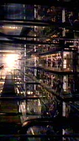

|
 |
"Qual é nosso curso, capitão?" "Segunda estrela à direita, e direto até
o amanhecer."
|

| Nesta
página você pode ter uma visão abrangente da estrutura do Trek
Brasilis. Por meio desse mapa do site fica muito mais fácil
descobrir onde está a informação exata que você procura, já
que cada seção conta com uma descrição detalhada do que pode
será encontrado lá. A capa do TB foi totalmente redesenhada, mas ainda permanece consistente com a filosofia clara e limpa de projeto que sempre foi marca do site. No topo da coluna lateral esquerda (agora um pouco rebaixada), temos as interfaces para os nossos serviços de lista de e-mail (uma newsletter semanal para todos os assinantes, com as atualizações e novidades do site) e de pesquisa de opinião (que é atualizada e tem os seus números finais postados de quinze em quinze dias, além de oferecer resultados parciais na própria capa). Ambos os serviços são auto-explicativos. O espaço para o Destaque Semanal foi ampliado na parte superior da página e as Notícias (na coluna central) voltam a permitir comentários "in loco", que agora são arquivados também. O arquivamento de notícias se dá de uma forma mais transparente do que antes, mantendo o formato de cada item. As editorias de Notícias esto divididas do seguinte modo: Interação
O título (na porção superior da capa) foi totalmente remodelado e tem agora, além do tradicional logo do TB, uma imagem e uma citao marcante de alguma personalidade do universo de Jornada, que se modifica aleatoriamente toda vez que você entra no site. O menu de conteúdo ficou dividido em duas seções. Uma mais ligada só atividades do próprio site ficou posicionada horizontalmente, com os seguintes botes: Guia do Site, Equipe, Entretenimento, Interação, Entrevistas, Links, Fórum e Bate-Papo. A coluna lateral direita contm o menu vertical, mais ligado a conteúdo fixo de Jornada nas Estrelas e ficção científica em geral. são doze as seções disponveis: Uma breve história de Jornada nas Estrelas, Série Clssica, Série Animada, Fase II, A Nova Geração, Deep Space Nine, Voyager, Enterprise, Filmes, Universão Expandido (livros, quadrinhos, games etc.), Enciclopdia oficial e Fico e Fantasia. Mais abaixo, essa coluna traz a exibição dos típicos "mais quentes" de discussão do nosso Fórum. Para voltar capa, a partir de qualquer ponto do site, basta clicar no logotipo do Trek Brasilis, no canto superior esquerdo. Veja agora o que h em cada uma das seções do TB.
Esta seção fala tudo sobre a estrutura, linguagem utilizada, filosofia, objetivos, novidades e origens do Trek Brasilis. Subseções: O novo design e o
futuro Nossa história Mapa do site Glossrio
Breve seção com foto, nome, e-Mail, função no site e pequena biografia pessoal dos membros da equipe do Trek Brasilis
Seção que agrupa a faceta mais divertida e bem-humorada do Trek Brasilis. Divirtam-se. Subseções Tiras
Cmicas do Sev Trek Trivia
Game Porthos'
Log Fan-fics Stiras
Seção que tem a função de facilitar, organizar e estimular a interação entre o TB e os seus leitores, e dos seus leitores entre si. Nela temos tudo sobre as seções, subseções e políticas do site envolvidas em tal esforço. Ela trata em particular da nossa Linha Quente (um canal aberto e direto entre nós e os nossos leitores) e da nossa Incubadora (que tem o objetivo de produzir e publicar artigos escritos por nossos leitores).
Contm entrevistas feitas pelo Trek Brasilis com diversas personalidades nacionais e internacionais associadas a Jornada nas Estrelas
Esta seção contm links para vários sites de referência. Ela está dividida em quatro subseções: Cinema (nacional e internacional), TV (nacional e internacional), Jornada nas Estrelas em português e Jornada nas Estrelas em ingls.
Participe da nossa comunidade virtual, formada por fãs de Jornada de todas partes do Brasil. só está faltando você.
Converse em tempo real com outros fãs de Jornada usando as facilidades dessa seção.
Uma breve história de Jornada nas Estrelas Texto voltado principalmente para os não iniciados ou para quem busca uma referência rápida que conta em linhas gerais a história do nosso amado franchise.
Seção referente Série Clássica de Jornada (também conhecida como "Star Trek" ou "TOS"), protagonizada por Kirk e cia. e exibida originalmente entre 1966 e 1969 nos EUA. Subseções Sobre a
Série Clássica Coluna Episdios Produção Universão Especiais &
DVDs
Seção referente Série Animada de Jornada (também conhecida como "Star Trek: The Animated Series" ou "TAS"), dublada por Shatner e cia. e exibida originalmente entre 1973 e 1974 nos EUA. Subseções Sobre a
Série Animada Episdios
Saiba tudo sobre a Fase II (ou "Star Trek: Phase II"), a série de Jornada que nunca foi ao ar e cuja pré-produção acabou dando origem ao primeiro filme de Jornada no cinema (em 1979). Por sua própria natureza, a seção para a série abortada do franchise tem um formato diferenciado das demais.
Seção referente a Jornada nas Estrelas: A Nova Geração (também conhecida como "Star Trek: The Next Generation" ou "TNG"), protagonizada por Picard e cia. e exibida originalmente entre 1987 e 1994 nos EUA. Subseções Sobre A Nova
Geração Coluna Episdios Produção Universão Especiais &
DVDs
Seção referente a Jornada nas Estrelas: Deep Space Nine (também conhecida como "Star Trek: Deep Space Nine" ou "DS9"), protagonizada por Sisko e cia. e exibida originalmente entre 1993 e 1999 nos EUA. Subseções Sobre Deep
Space Nine Coluna Episdios Produção Universão Especiais &
DVDs
Seção referente a Jornada nas Estrelas: Voyager (também conhecida como "Star Trek: Voyager" ou "VOY"), protagonizada por Janeway e cia. e exibida originalmente entre 1995 e 2001 nos EUA. Subseções Sobre
Voyager Coluna Episdios Produção Universão Especiais &
DVDs
Seção referente a Enterprise (também conhecida como "ENT"), protagonizada por Archer e cia. e exibida originalmente entre 2001 e 2008 nos EUA. Subseções Sobre
Enterprise Coluna Episdios Produção Universão Especiais &
DVDs
Seção referente série de filmes de Jornada para o cinema. Engloba os filmes como um todo, sem distinguir pela série que gerou cada um deles em particular. Subseções Sobre os filmes
de Jornada para o cinema Coluna Episdios Produção Universão Especiais
& DVDs
Universão Expandido (livros, quadrinhos, games etc.) Esta seção trata de todo o material não canônico do universo ficcional de Jornada (excluindo a Série Animada, que conta com uma seção específica para ela). Subseções Livros Quadrinhos Games Memoramobilia
O projeto mais ambicioso da história do Trek Brasilis. Tem o objetivo de permitir buscas com relação a qualquer item de informação disponível no site. Um banco de dados que um dia vai englobar todos elementos da produção e do universo ficcional de Jornada. Definitivamente um trabalho colossal e sempre em progresso, rumando para esse objetivo. A seção está dividida em verbetes por ordem alfabtica e conta com uma cronologia (sempre em processo de atualização) do universo de Jornada
Esta seção agrupa todos os artigos produzidos pelo TB sobre Fico e Fantasia e não referentes a Jornada nas Estrelas em particular. Subseções |